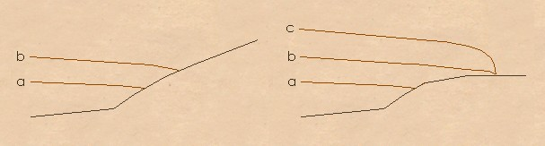

It is easier to explain how the bore forms if we separate the cause of
the bore from what is going on inside it.
Bores are caused by the flooding of tidal waters up a river. Normally
tidal rivers don't have bores, either because the tidal range isn't
very big (broadly meaning that there is a smaller rise in waterlevel over
the same time period, and it can therefore creep more gently upriver)
or because the angle of the land is
steep enough that each metre of tidal rise only creeps alittle way inland.
However, on rivers with a large tidal range1 and low-lying land, the water
overflows the river water and rushes back up the low-lying land*. Because the
river water is in the way (and the river bed has some friction) the
water at the front of the tide can't move upstream as fast as the
tide is rising downstream, and a wall of water, pushed from behind,
builds up at the junction between the tide and the
river***.
What's going on inside a bore?
Figure: As a normal tide hitting steep
land (left) rises from 'a' to 'b' the water has less distance to travel inland
than a tide hitting low-lying land (right). In addition, a higher tide 'c'
has even further to go. (diagram after Lynch*)